Devlog Three Overview
For this devlog, I have been focusing a lot on filling out the game that I already have. In a way. So, I have been adding in a lot more blocks. Honestly, I was gonna add even more, but I'm starting to want to work on another aspect of the game now.
I'm of course going to still add more blocks and items with future devlogs, but this update was meant to focus exclusively on adding a bunch of them at one time. And when I play games with building mechanics, I want options to build with. So, in my eyes, updates like this are very important to add. Especially since I'm making a game that I would actually want to play.
Main Features
Well, the biggest feature of this devlog is of course the amount of different blocks I've added into the game. Most of the blocks currently can't be found in the world as of yet, but hint, maybe they can be crafted. If you didn't catch that, the next devlog I release will likely deal with crafting. And now that I type this, I realize that means I'll likely have to add a bunch of items like dyes and what now. Sigh...
The picture of all the blocks is at the top of the page, but here it is again for your convenience.
You'll notice that most of the blocks I've added come as a color set for a block type. I'll talk more about that in the block section of the page.
Not all, but some of the blocks can be aquired in the world. Some by the labor of the player. This will introduce a new feature I added: using a tool to change a block. Kinda cool. One example of this is using an axe to strip wood logs of their bark.
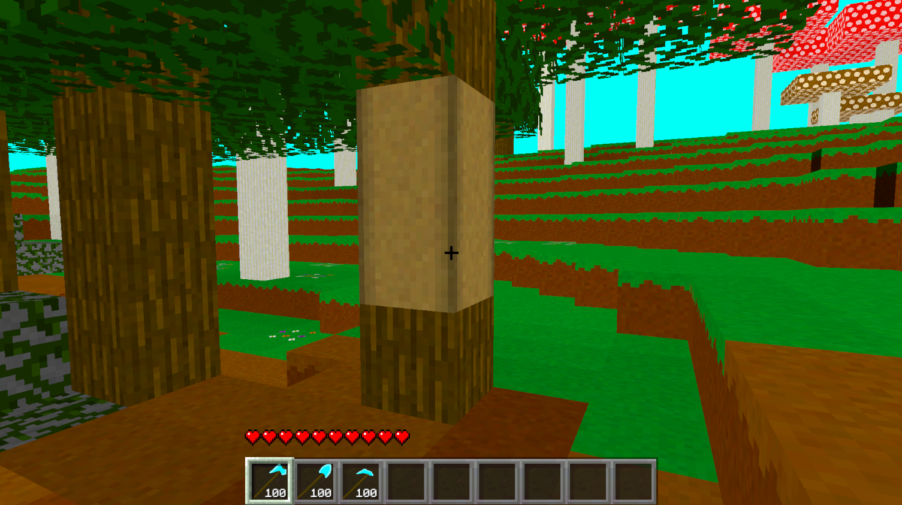
Some other examples of this is using a hoe on dirt to get farmland, or a shovel on grass to get path blocks. Or back to the axe, using that tool on a pumpkin to get a Jack o' Lantern. All things that are in the original Minecraft, but I like them, so I added them to my game.
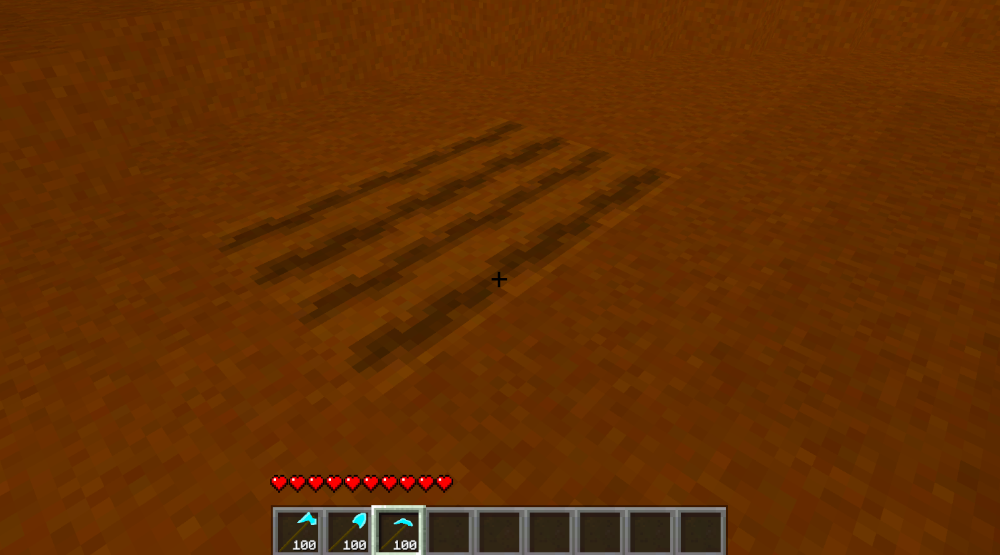
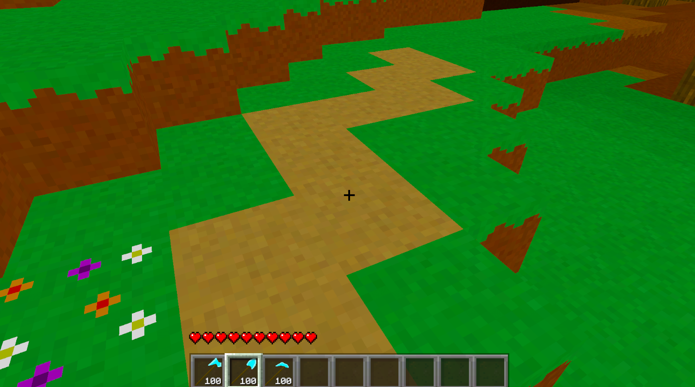
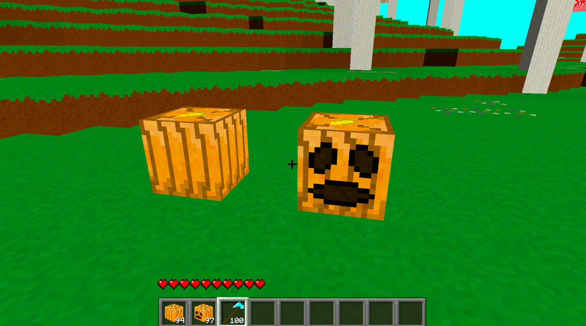
This feature of changing the blocks was actually pretty easy to add, since it's similar to destroying blocks. For destroying blocks, I'm changing a block in front of me to an air block. For this new feature, I'm changing it to a different block instead depending on which tool I have equipped and what block I'm looking at.
With all the new blocks I've been adding and I'm sure I'll add into the future, I had to change up my creative inventory system slightly. Basically, I added a scroll bar for the categories that were getting too long. This was simple to do thankfully, since I just used the components that Unity already has built into their engine. And now I can add many more blocks to the creative inventory in the future.
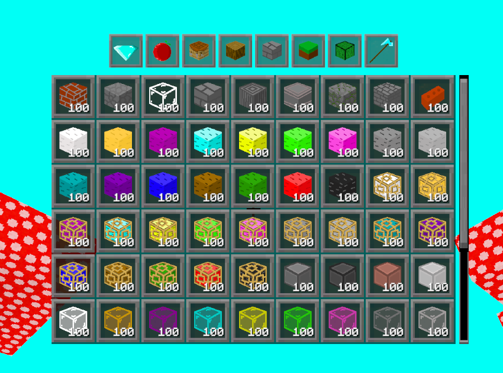
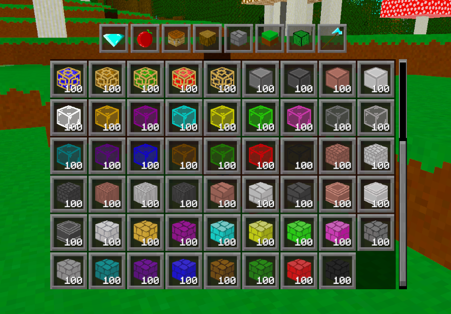
Also yes, I do know I should organize the inventory a little. I will not do that until the game is ready to share with game testers. I've been adding too many things to the creative inventory to be constantly organizing it.
Biomes
During this devlog, I added in a new biome which has been at the back of my mind: the Mushroom Forest. This biome contains giant red and brown mushrooms. The red mushroom is larger and populates the land more. The brown mushroom is smaller and slightly more sparse.
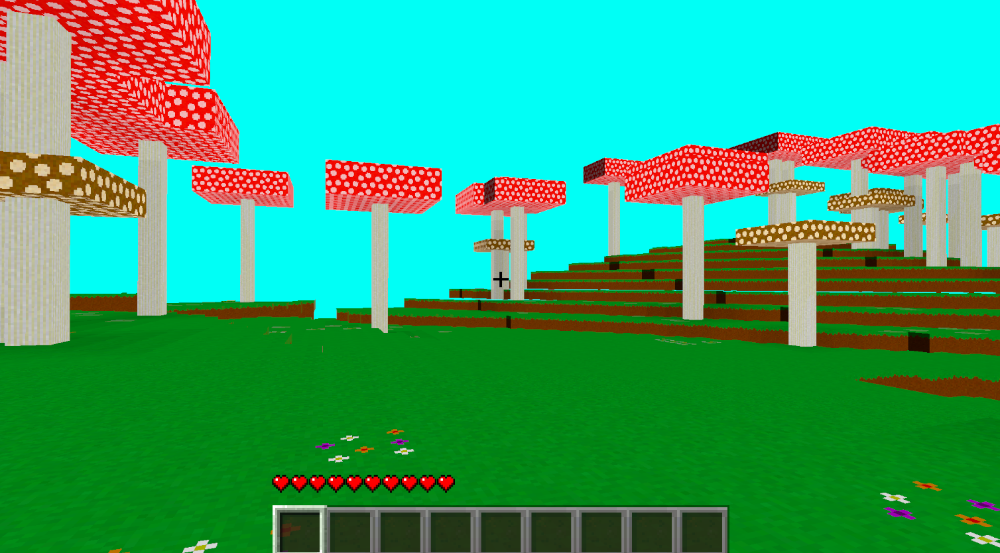
There are some lighting problems (black sides of blocks) in the game I need to work on, but ignore that for me. The mushrooms themselves consist of several new blocks, and I'm a fan of how they look. On the forest ground, you'll also notice patches of another new block: Flowering Grass, which I think adds a little something more to look at. Especially since I don't have any proper grass or flowers in the game yet. Definitely something to work on in the future.
Blocks
I won't add too much into this section (joke) of the devlog, since I've talked about the blocks quite a bit already. But I wanted to give a shoutout to some of the blocks that aren't found in the world... yet. This would be stuff like wool, which I've added into the game. Along with wool, I've added in Reinforced Wool, which has a funny name, but I like the appearance of.
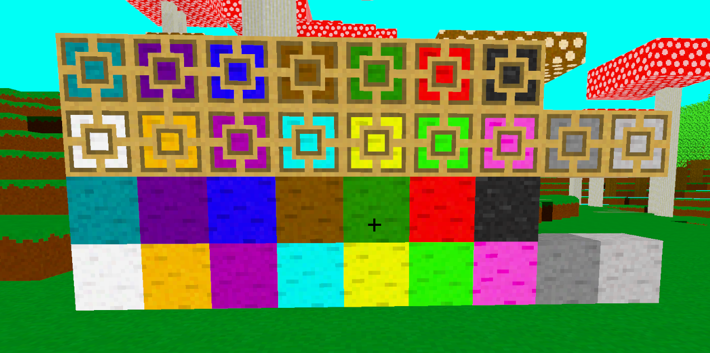
There are a few block sets full of colours outside of wool. One of them is glass. The problem I have currently with the glass is that my transparent material isn't rendering anything half opaque. Either fully transparent or fully opaque. The coloured windows are supposed to have a tint to them, but they don't. I am running custom shader scripts which is how I get lighting to go through transparent materials, so I think the problem lies somewhere there. But! I basically had to walk through a few tutorials sucking my thumb to get what I have already, and I have no idea how to get what I want. So, that might be a future devlog kind of problem: something to focus on in the future. Also because of the lack of tint on the windows, the White Stained Glass and regular Glass look exactly the same right now. Don't worry about it.
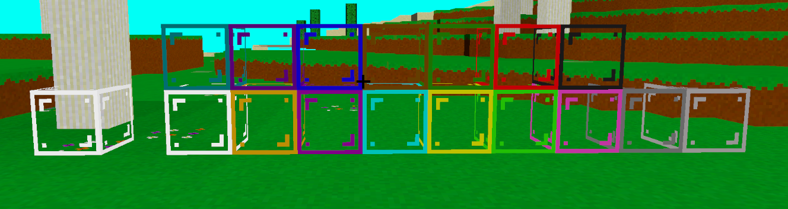
Anyways, another color blockset is terracotta. This blockset comes with Terracotta Shingles, which I'm honestly a big fan of. I really think they should be in the original Minecraft game. I think they'd be an excellent building block for making roofs. And when I finally add in slabs and stairs, that will be especially true. Terracotta in the game looks a lot like wool in a way, but smoother and less vibrant.
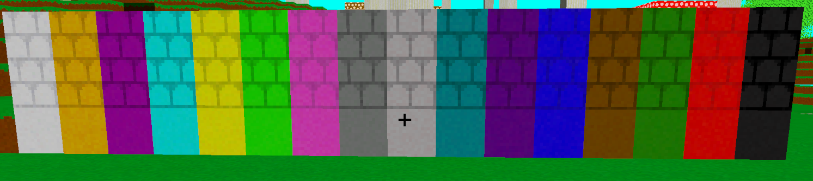
The last block set(s) I'll talk about is for the different stone types. I now have smooth, pillar, cut, and tiled blocks for all the different overworld stone blocks. These might be my favourite building blocks as of yet.
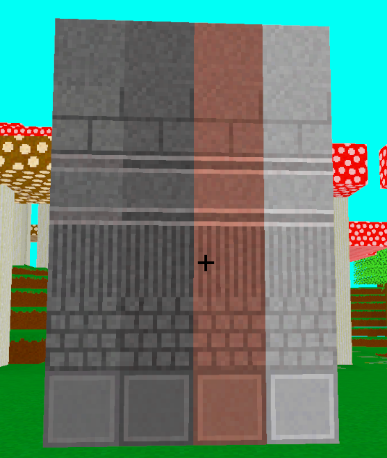
Conclusion
I love adding new blocks, especially those that will add to my building set. There is a skill set though for the art that I wish I was a little higher for, but I think my blocks and icons look well enough for me, so I'm happy. There are a few blocks I didn't talk about since there isn't much too them, but I'll give a shoutout to a few here. Rooted Dirt, which spawns just under trees. Snow, which is a very white block, and will likely be in some new biomes in the future. There are still more, but you can look at the picture of all the blocks to see what they are.
I'm very happy with the progress I made during this devlog. And I really do believe adding in a huge amount of blocks will be amazing for everybody who likes to build in games, like me. They'll be appreciate of my pain. I think following this devlog, I will try to do a more coding/ technical update. We'll see. I know I really want to finally add crafting, so that will be likely. I have a few ideas for it as well. But who knows; maybe my inspiration will take me in a completely different direction.